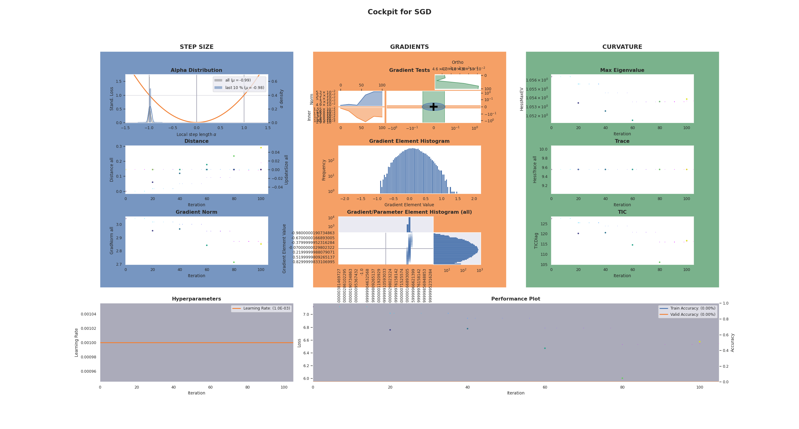

DeepOBS Example¶
Cockpit easily integrates with and can be used together with DeepOBS. This will directly give you access to dozens of deep learning problems that you can explore with Cockpit.
Note
This example requires a DeepOBS and a BackOBS installation. You can install them by running
pip install 'git+https://github.com/fsschneider/DeepOBS.git@develop#egg=deepobs'
and
pip install 'git+https://github.com/f-dangel/backobs.git@master#egg=backobs'
Note, that currently, only the 1.2.0 beta version of DeepOBS supports PyTorch which will be installed by the above command.
Note
In the following example, we will use an additional utility file which automatically incorporates Cockpit
with the DeepOBS training loop.
Having the two utility files from our repository we can run
python 03_deepobs.py
which exectues the following example script:
1"""An example of using Cockpit with DeepOBS."""
2
3from _utils_deepobs import DeepOBSRunner
4from _utils_examples import get_logpath
5from torch.optim import SGD
6
7from cockpit.utils import configuration, schedules
8
9optimizer = SGD
10hyperparams = {"lr": {"type": float, "default": 0.001}}
11
12track_schedule = schedules.linear(10)
13plot_schedule = schedules.linear(20)
14quantities = configuration.configuration("full", track_schedule=track_schedule)
15
16runner = DeepOBSRunner(optimizer, hyperparams, quantities, plot_schedule=plot_schedule)
17
18
19def const_schedule(num_epochs):
20 """Constant learning rate schedule."""
21 return lambda epoch: 1.0
22
23
24runner.run(
25 testproblem="quadratic_deep",
26 output_dir=get_logpath(),
27 l2_reg=0.0,
28 num_epochs=50,
29 show_plots=True,
30 save_plots=False,
31 save_final_plot=True,
32 save_animation=False,
33 lr_schedule=const_schedule,
34)
Just like before, we can define a list of quantities (here we use the
configuration "full") that we this time pass to the
DeepOBSRunner. It will automatically pass it on to the Cockpit.
With the arguments of the runner.run() function, we can define whether we want
the CockpitPlotter plots to show and/or be stored.
The Cockpit will show a status screen every few epochs, as well as writing to a logfile and saving its final plot, after training completed.
$ python 03_deepobs.py
********************************
Evaluating after 0 of 15 epochs...
TRAIN: loss 7.0372
VALID: loss 7.07626
TEST: loss 7.06894
********************************
[cockpit|plot] Showing current Cockpit.
********************************
Evaluating after 1 of 15 epochs...
TRAIN: loss 7.00634
VALID: loss 7.01242
TEST: loss 7.00535
********************************
********************************
Evaluating after 2 of 15 epochs...
TRAIN: loss 6.98335
VALID: loss 6.94937
TEST: loss 6.94255
********************************
[cockpit|plot] Showing current Cockpit.
[...]
The fifty epochs on the deep quadratic problem will result in a Cockpit plot similar to this:
